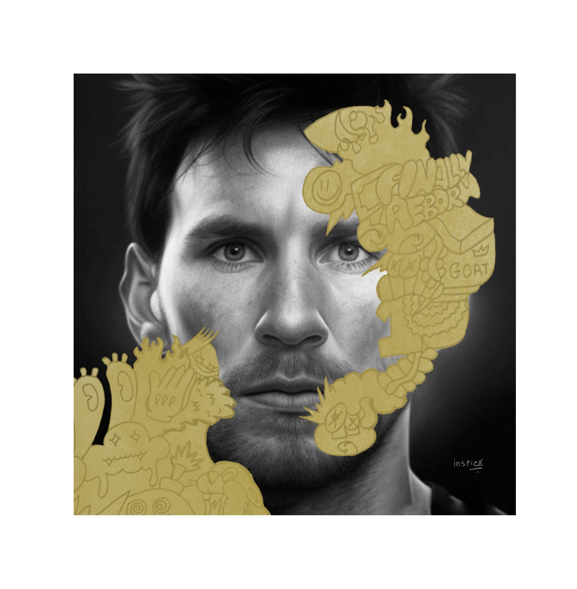
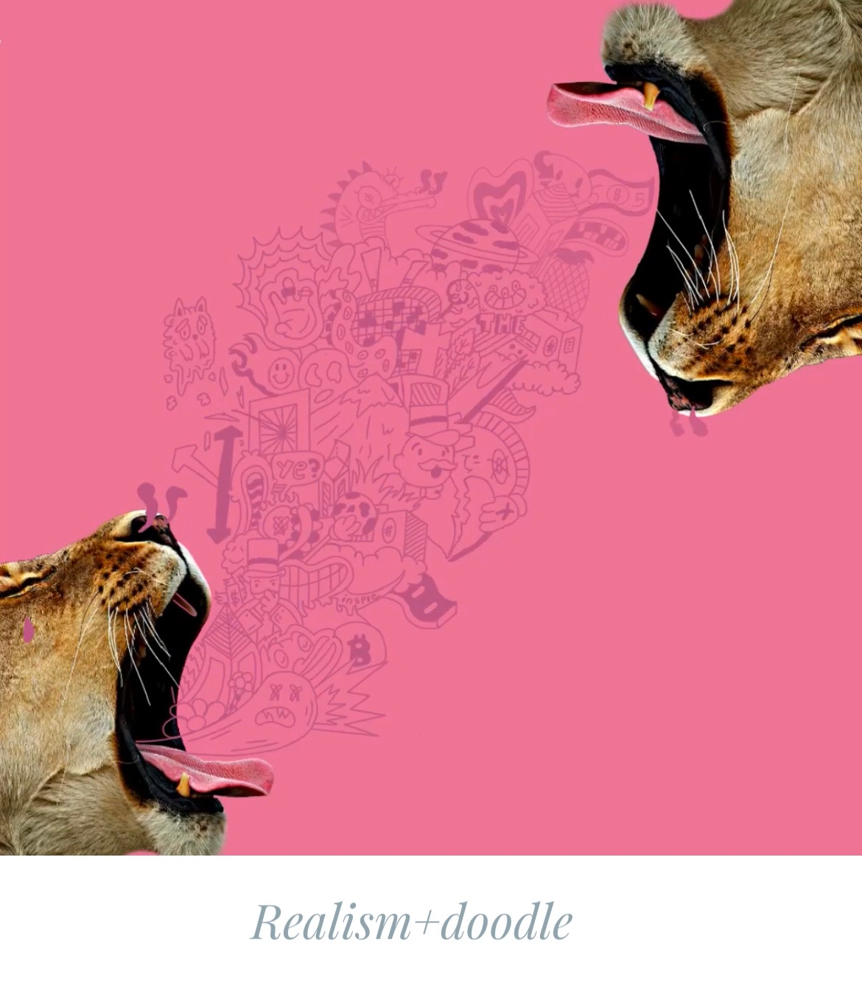
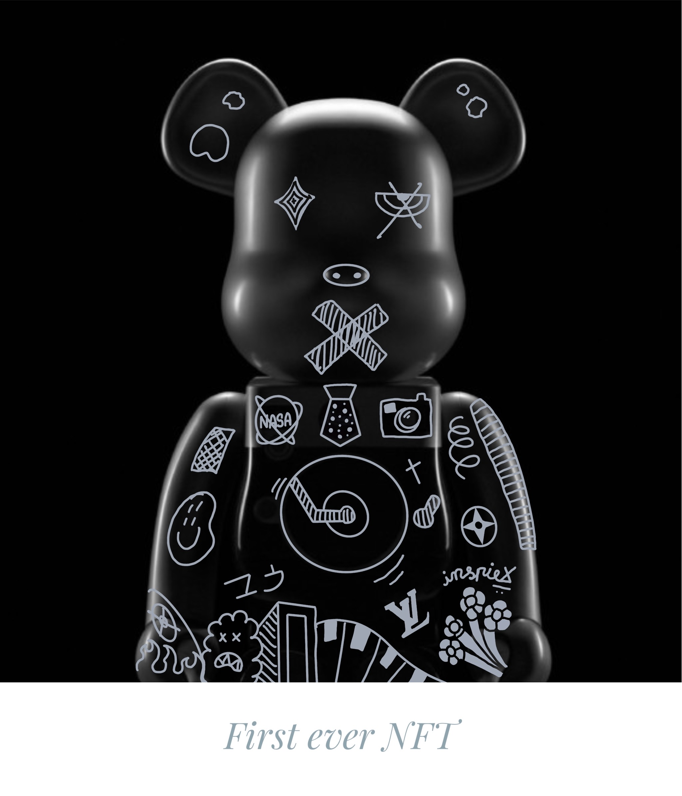
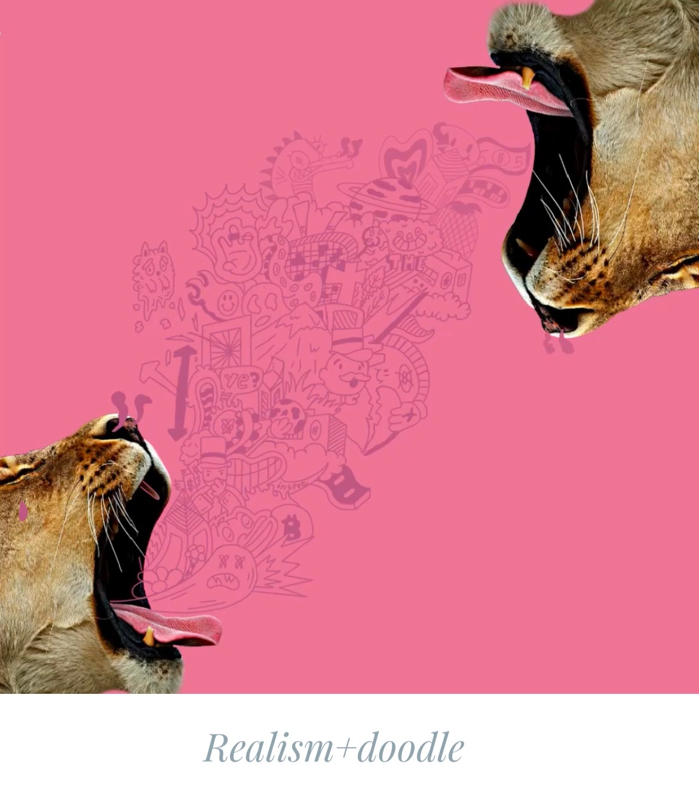
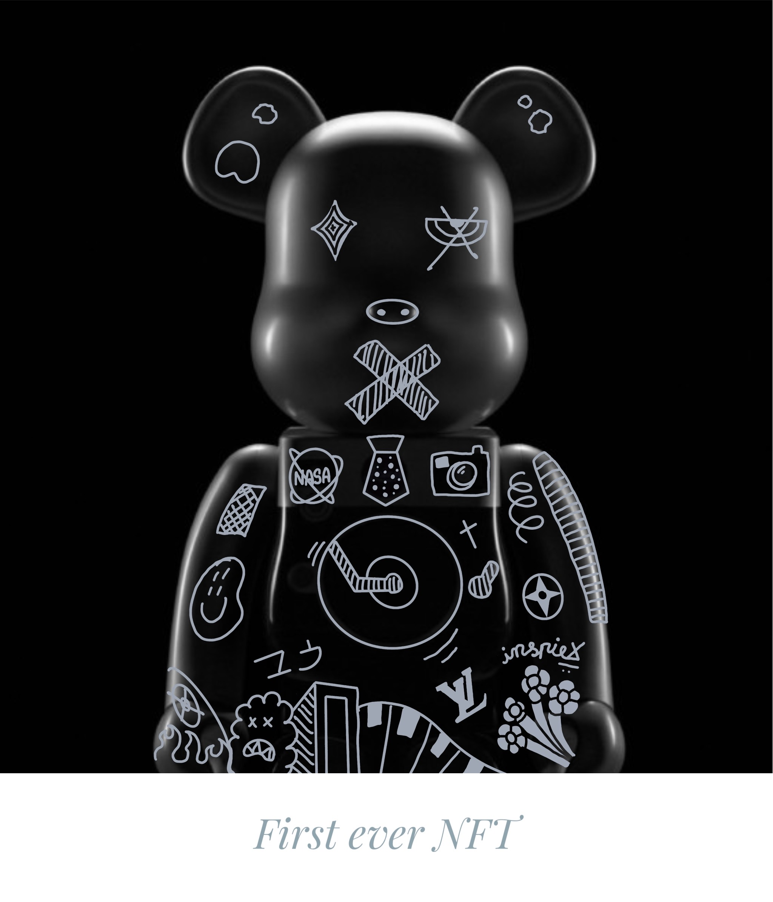
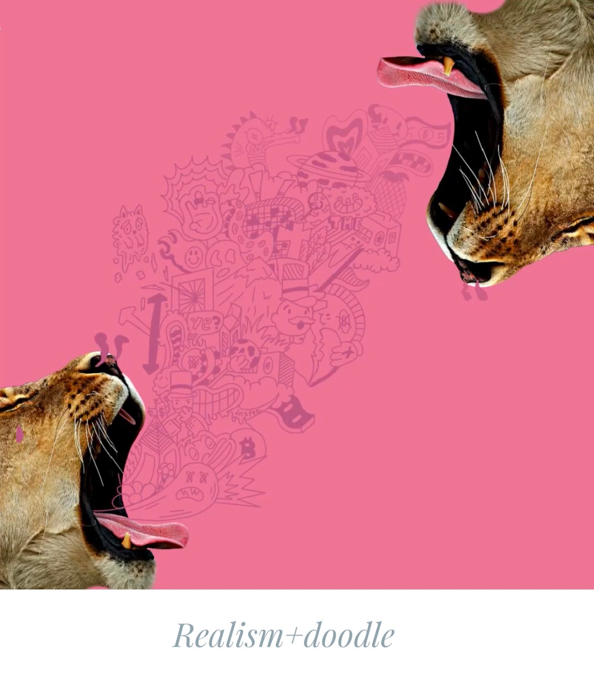
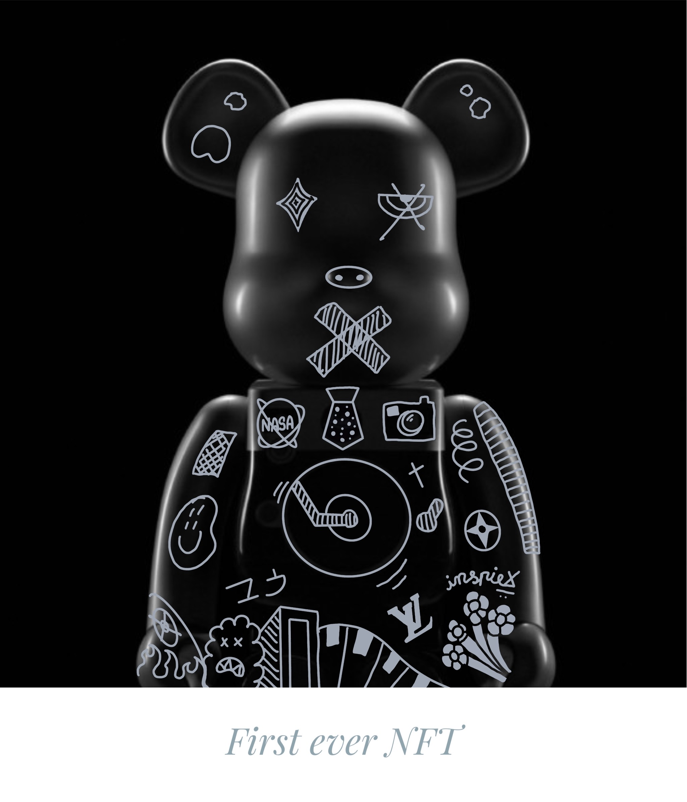

portfolio

 




Python
Editing

Art+procreate


SERVICES
Python
I was introduced to coding through extracurricular classes. It was in these classes that I first discovered my passion for programming and began to explore. As I continued to develop my skills and knowledge, I found myself more and more engrossed in the challenges and opportunities presented by coding. This experience sparked a deep interest in computer science, leading me to continue to explore new possibilities and push the boundaries of what is possible through programming.
Editing
Since childhood, I've been passionate about video editing, inspired by Marvel and Avatar films. I worked hard to develop my skills and create my own visual effects. Joining my school's editing team allowed me to collaborate with others and grow even further. Today, I'm still captivated by visual storytelling and constantly push the limits in video editing.
Art+procreate
Doodling has been a go-to source of comfort and self-expression for me. It's a simple yet powerful way to channel my thoughts and emotions onto paper, helping me to calm my mind and regain focus. sharing my doodles with others has allowed me to inspire and connect with like-minded creatives, encouraging them to embrace their own unique talents and perspectives.